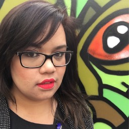

Introduction
My name is Rachel Nacilla. I’m an experienced technologist who enjoys hands-on work and leading meaningful technical outcomes.
My Projects
-
{% for item in site.categories.projects reversed %}
-
{{ item.project.type }}
{{ item.project.title }}
{% endfor %}
About Me

I’m a skilled technologist with over 10 years of experience in technology, data management, and analytics, recently focusing on leveraging data to solve complex problems and support smarter decision-making. I’ve worked across industries including education, healthcare, the public sector, financial services, and marketing, designing data solutions that improve accuracy, usability, and business outcomes.
I enjoy leading projects, mentoring others in technical and analytical skills, and taking a strategic, outcomes-focused approach to delivering robust, creative solutions.
I am known for excellent outcome orientation, a strategic approach to innovation and finding a creative and robust solution that enhances business objectives.
Outside of work, I am passionate about creating and listening to music. I'm into landscape photography, fibre arts , travelling and playing chess. I'm also a self-taught illustrator.
I am currently based in Wollongong, NSW, Australia.